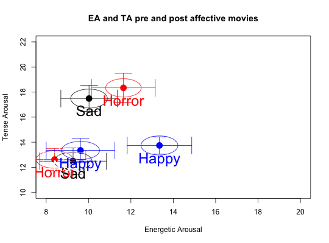
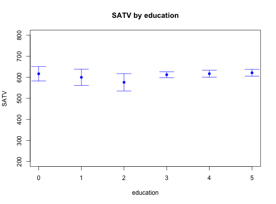

Given a matrix or data frame, data, find statistics based upon a grouping variable and then plot x and y means with error bars for each value of the grouping variable. If the data are paired (e.g. by gender), then plot means and error bars for the two groups on all variables.
errorCircles(x, y, data, ydata = NULL, group=NULL, paired = FALSE, labels = NULL, main = NULL, xlim = NULL, ylim = NULL, xlab = NULL, ylab = NULL,add=FALSE, pos = NULL, offset = 1, arrow.len = 0.2, alpha = 0.05, sd = FALSE, bars = TRUE, circles = TRUE, colors=NULL,col.arrows=NULL,col.text=NULL,circle.size=1, ...)
| x | The x variable (by name or number) to plot |
|---|---|
| y | The y variable (name or number) to plot |
| data | The matrix or data.frame to use for the x data |
| ydata | If plotting data from two data.frames, then the y variable of the ydata frame will be used. |
| group | If specified, then |
| paired | If TRUE, plot all x and y variables for the two values of the grouping variable. |
| labels | Variable names |
| main | Main title for plot |
| xlim | xlim values if desired-- defaults to min and max mean(x) +/- 2 se |
| ylim | ylim values if desired -- defaults to min and max mean(y) +/- 2 se |
| xlab | label for x axis -- grouping variable 1 |
| ylab | label for y axis -- grouping variable 2 |
| add | If TRUE, add to the prior plot |
| pos | Labels are located where with respect to the mean? |
| offset | Labels are then offset from this location |
| arrow.len | Arrow length |
| alpha | alpha level of error bars |
| sd | if sd is TRUE, then draw means +/- 1 sd) |
| bars | Should error.bars be drawn for both x and y |
| circles | Should circles representing the relative sample sizes be drawn? |
| colors | Plot the points using colors -- default is black |
| col.text | What color for the text labels (defaults to colors) |
| col.arrows | What color should the arrows and circles be? Defaults to colors |
| circle.size | A scaling parameter for the error.circles. Defaults to 1, but can be adjusted downwards to make them less instrusive. |
| … | Other parameters for plot |
When visualizing the effect of an experimental manipulation or the relationship of multiple groups, it is convenient to plot their means as well as their confidence regions in a two dimensional space.
The diameter of the enclosing circle (ellipse) scales as 1/sqrt(N) * the maximum standard error of all variables. That is to say, the area of the ellipse reflects sample size.
If the group variable is specified, then the statistics from statsBy are (invisibly) returned.
Basically this is a combination (and improvement) of statsBy with error.crosses. Can also serve some of the functionality of error.bars.by (see the last example).
statsBy, describeBy, error.crosses
#BFI scores for males and females errorCircles(1:25,1:25,data=bfi,group="gender",paired=TRUE,ylab="female scores", xlab="male scores",main="BFI scores by gender")abline(a=0,b=1)#drop the circles since all samples are the same sizes errorCircles(1:25,1:25,data=bfi,group="gender",paired=TRUE,circles=FALSE, ylab="female scores",xlab="male scores",main="BFI scores by gender")abline(a=0,b=1)data(affect) colors <- c("black","red","white","blue") films <- c("Sad","Horror","Neutral","Happy") affect.stats <- errorCircles("EA2","TA2",data=affect[-c(1,20)],group="Film",labels=films, xlab="Energetic Arousal",ylab="Tense Arousal",ylim=c(10,22),xlim=c(8,20), pch=16,cex=2,colors=colors, main ="EA and TA pre and post affective movies")#now, use the stats from the prior run errorCircles("EA1","TA1",data=affect.stats,labels=films,pch=16,cex=2,colors=colors,add=TRUE)#show sample size with the size of the circles errorCircles("SATV","SATQ",sat.act,group="education")#Can also provide error.bars.by functionality errorCircles(2,5,group=2,data=sat.act,circles=FALSE,pch=16,colors="blue", ylim= c(200,800),main="SATV by education",labels="")#just do the breakdown and then show the points # errorCircles(3,5,group=3,data=sat.act,circles=FALSE,pch=16,colors="blue", # ylim= c(200,800),main="SATV by age",labels="",bars=FALSE)